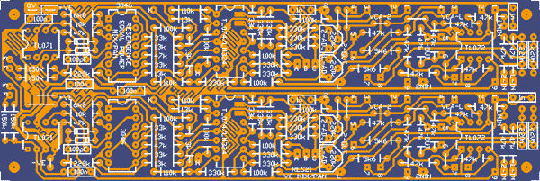
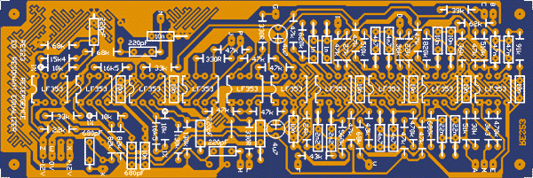
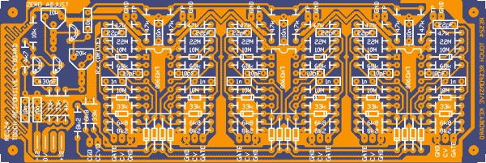
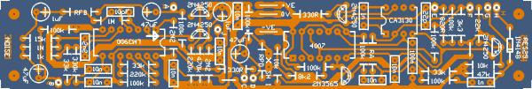

RES21
Equal Power panner, mixer. Dual version of RES19. This board was reverse engineered from the Driscoll Stereo mixer/panner. It represents two channels and uses four standard serge VCA sub modules to do the mixing or panning. Some modules will require one of these boards while some will require two.
Unfortunately there are so many components on this board that the power bus had to be dropped. The VCA sub modules will need to be mounted higher than usual so they clear the components that are on the PCB directly below them. It may not be the neatest solution, but it sure looks better than the mess of PCBs used in the Driscoll.
4 units effective width (comes with 4 VCA sub-modules)

RES22
A recreation of the little LED buffer kit as described in the Serge Modular Kit Manual
50c each
RES23
Resonant Equalizer 202
Serge Resonant Equalizer, from 202 PCB and Dean's schematic.
2 units width

RES24
Touch Responsive Switch
Touch Responsive Switch from Synapse. 6 stages. In the article it is suggested that the pads be covered with a thin film. These are covered in solder mask. It is even possible that they may work through the thickness of the fibreglass too.
2 units width + 2 units width

RES25
Noise
Noise source as from the old schematic with reference to the PCB. As such it has a couple of "extra" parts. RA = 100k pull down from pin 2 of CA3130. On diagram, but not apparently on the PCB (unless it is on the track side). RPD = mystery component that connects between "C" and the negative rail. FRB is the drive resistor in the feedback loop of the white noise generator. On one PCB and the diagram it is 47k. On another it is 470k. REDUCING it should increase the pink noise level while reducing the white level. 100k* is in parallel with an existing 10k resistor. No need to install it, unless you cut the track between the two pads marked "X". this corresponds to the cut for an external S/H input (SH I) as per the old diagram. Unspecified electro in the noise source buffer has been guestimated as 1uF. Unlabelled push button pad has been labelled "J". 6V though connection has been left off due to density of PCB. (no loss, you say.)
1 unit width
